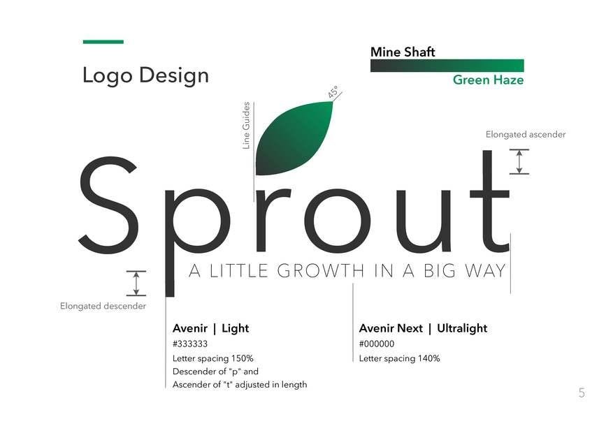
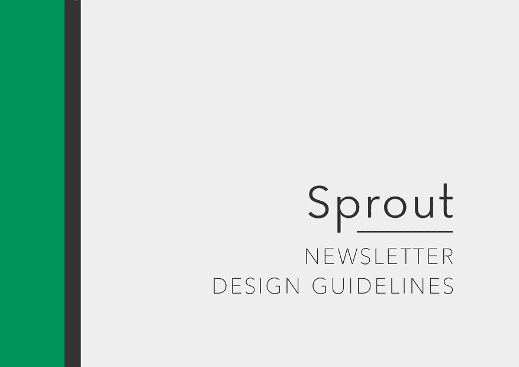
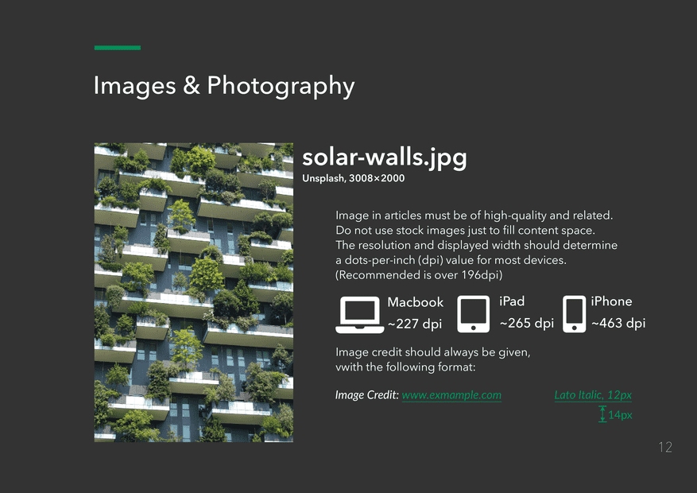
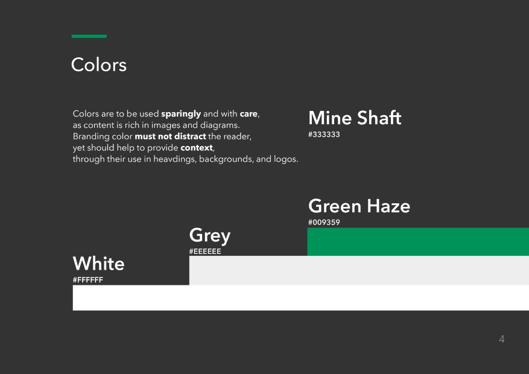
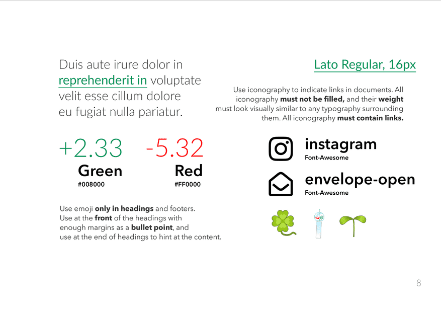
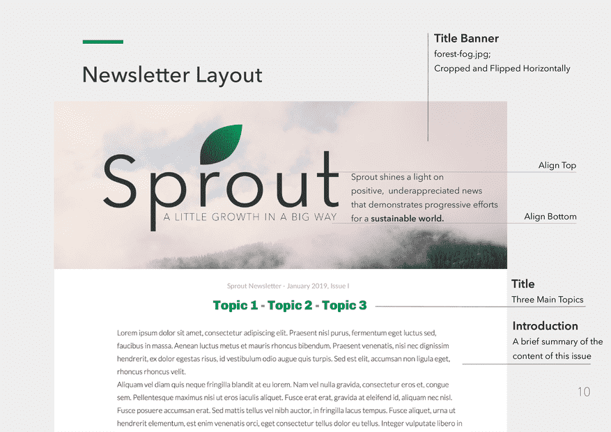
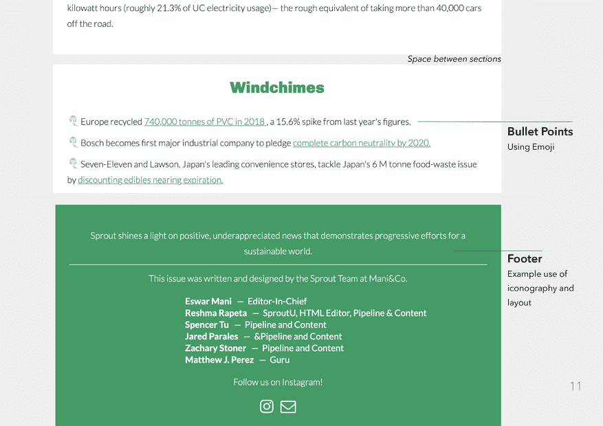
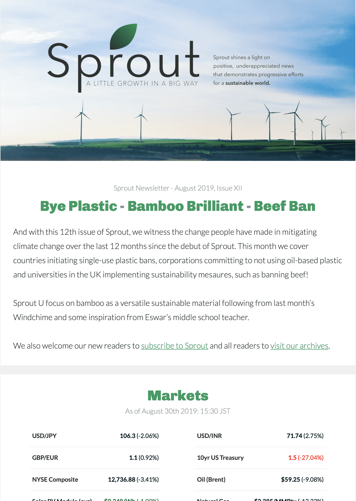
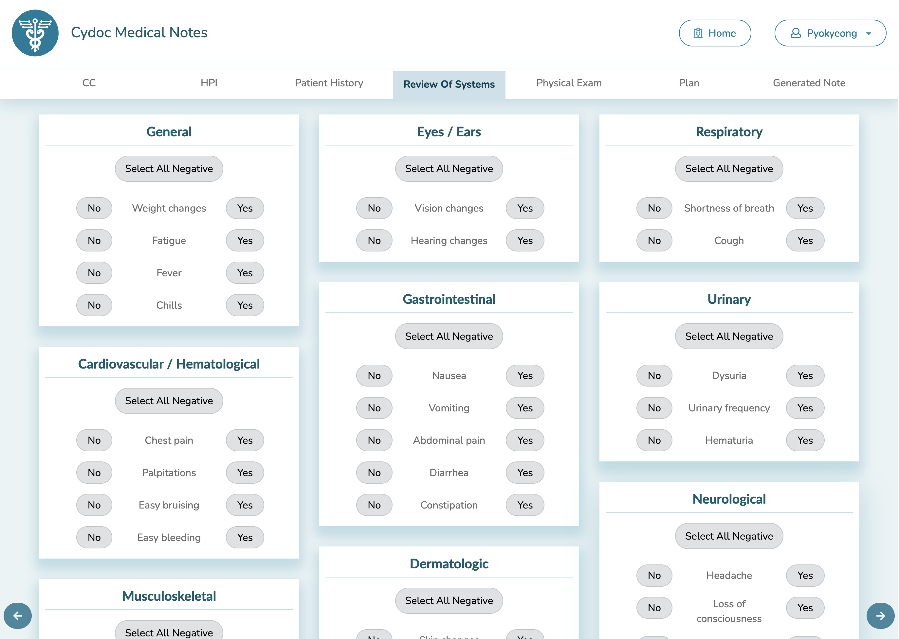
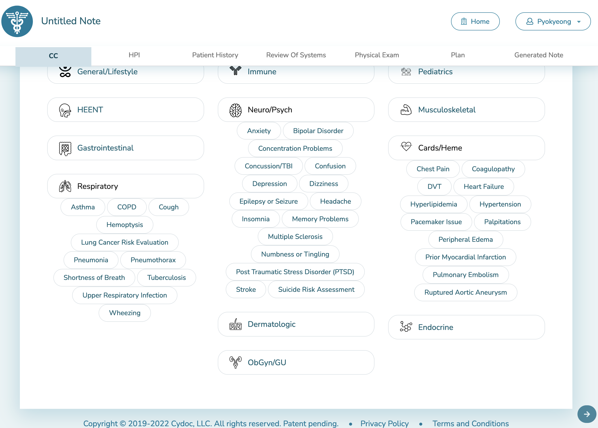

Kye Son 손표경
 한국어
한국어
 日本語
日本語
Korean, from Japan, in America.
Comp. Sci. Economics
CS & Math | Projects
Exploration of Fundamental Mathematics via Implementation of Common Axiom Systems and Proof Generation
CS & Math | Skills
Front End Web Development React, JQuery, Javascript, HTML&CSS.
Front-End Web Dev
Wolfram
Mathematica
Mathematica
Linux SysAdmin
C, Java, Python, Wolfram Language, Swift, HTML & CSS, Bash
Writing | Academic
The Reflection of Renaissance Humanism in East Asian Philosophy from an Artistic, Medical, and Musical Perspective of Korea
The Myth of Meritocracy and False Hope in Korean College Admissions and Preparation
羅生門 Alt.
More casual writing can be found at Medium
Design

Sprout Email Newsletter - Web Design & Branding
Design Guide




Newsletter Design
 Before

After
User Interface
Cydoc Medical Notes - Web Design & Branding
Logo Iterations
Screenshots


Icons made by Freepik from www.flaticon.com